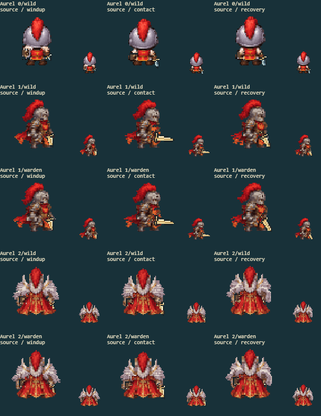
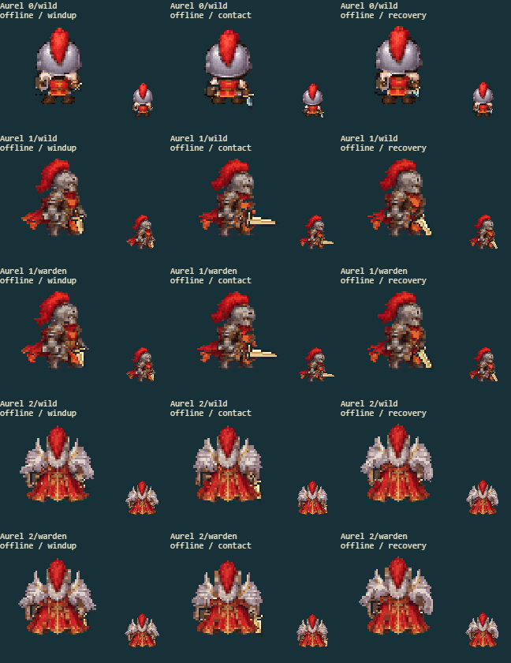

10 separate source/offline fights, covering every available form and path. The right panels show the actual cached sprite drawn in battle, before the hit-flash overlay, at native size and enlarged. The arena panel retains combat effects.
Full delivered-game screenshot · Contact inspection
| Factor | Result | Observed |
|---|---|---|
| Arm ownership | pass | One gauntlet/forearm per side; the old sleeve outlines no longer remain on the body. |
| Torso continuity | pass | Red tabard and chest armor remain solid beneath the lifted arms, including the west profile. |
| Grip contact | pass | Sword and shield follow their fixed source hands; the west near hand stays on its authored side of the chest. |
| Sprite completeness | pass | Plume, pauldrons, red cloak and armor details remain present in source and offline captures. |
| Motion and cell bounds | pass | Idle, travel, strikes and recovery retain connected cuffs; decoded falls keep the complete armor inside the cell. |


Original/current anatomy in all eight facings: authored form 0 · authored form 1 · authored form 2